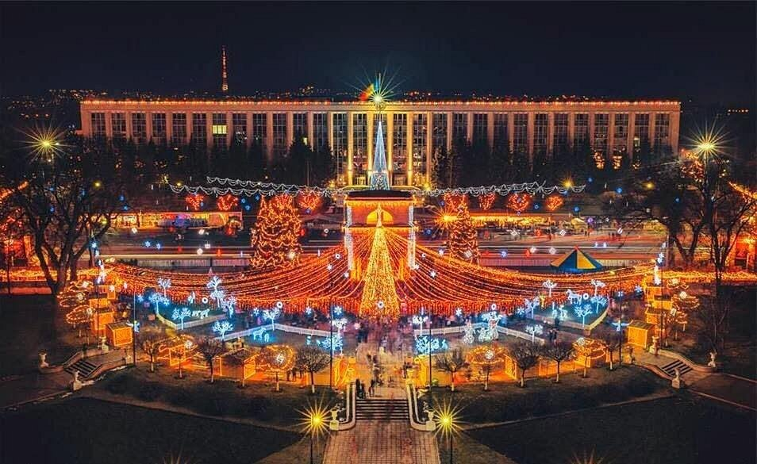

Tempat Wisata
Orheiul Vechi
Orheiul Vechi adalah kompleks sejarah dan arkeologi Moldova yang terletak di Trebujeni, yang berjarak sekitar 60 kilometer (37 mil) di timur laut Chișinău di Sungai Răut di Republik Moldova.

Chișinău
Chișinău, dahulu dikenal sebagai Kishinev, adalah ibu kota dan kota terbesar di Republik Moldova. Kota ini merupakan pusat industri dan komersial utama Moldova, dan terletak di tengah negara, di sungai Bîc, anak sungai Dniester.
Călărași
Kota yang indah di utara Moldova, dikenal dengan keindahan alam dan aktivitas luar ruangan.Călărași ( Pengucapan Rumania: [kələˈraʃʲ] ⓘ ) adalah sebuah kota diMoldova, yang didirikan pada tahun 1848.